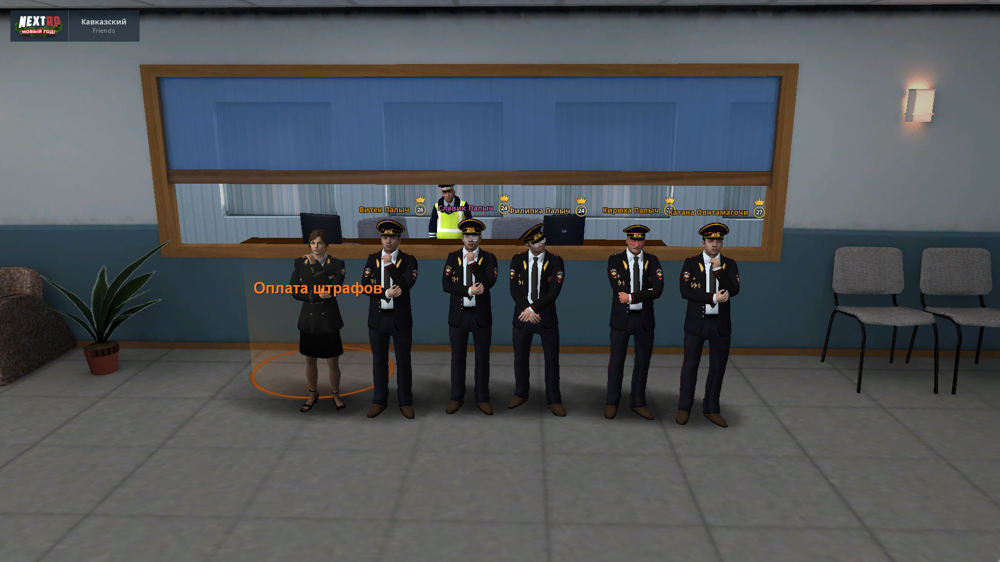
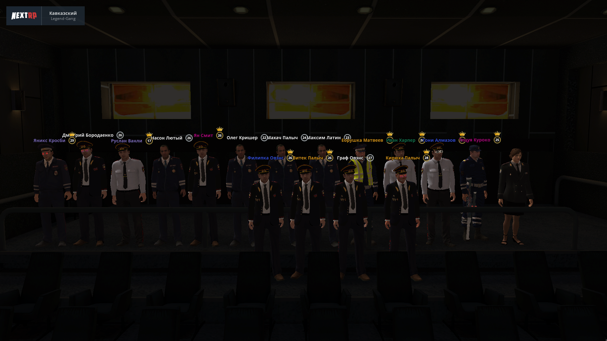
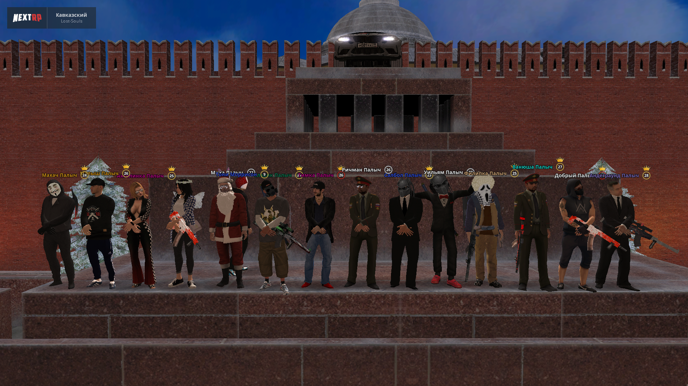

<!doctype html>
<html lang="ru" data-bs-theme="auto">

<head>
  <script src="https://f1low.github.io/family/assets/js/color-modes.js"></script>

  <meta charset="utf-8">
  <meta name="viewport" content="width=device-width, initial-scale=1">
  <meta name="description" content="">
  <meta name="author" content="Mark Otto, Jacob Thornton, and Bootstrap contributors">
  <meta name="generator" content="Hugo 0.118.2">
  <title>Owens

  </title>

  <link rel="canonical" href="https://getbootstrap.com/docs/5.3/examples/jumbotron/">


  <link rel="stylesheet" href="https://cdn.jsdelivr.net/npm/@docsearch/css@3">

  <link href="https://f1low.github.io/family/assets/dist/css/bootstrap.min.css" rel="stylesheet">

  <style>
    .bd-placeholder-img {
      font-size: 1.125rem;
      text-anchor: middle;
      -webkit-user-select: none;
      -moz-user-select: none;
      user-select: none;
    }

    @media (min-width: 768px) {
      .bd-placeholder-img-lg {
        font-size: 3.5rem;
      }
    }

    .b-example-divider {
      width: 100%;
      height: 3rem;
      background-color: rgba(0, 0, 0, .1);
      border: solid rgba(0, 0, 0, .15);
      border-width: 1px 0;
      box-shadow: inset 0 .5em 1.5em rgba(0, 0, 0, .1), inset 0 .125em .5em rgba(0, 0, 0, .15);
    }

    .b-example-vr {
      flex-shrink: 0;
      width: 1.5rem;
      height: 100vh;
    }

    .bi {
      vertical-align: -.125em;
      fill: currentColor;
    }

    .nav-scroller {
      position: relative;
      z-index: 2;
      height: 2.75rem;
      overflow-y: hidden;
    }

    .nav-scroller .nav {
      display: flex;
      flex-wrap: nowrap;
      padding-bottom: 1rem;
      margin-top: -1px;
      overflow-x: auto;
      text-align: center;
      white-space: nowrap;
      -webkit-overflow-scrolling: touch;
    }

    .btn-bd-primary {
      --bd-violet-bg: #712cf9;
      --bd-violet-rgb: 112.520718, 44.062154, 249.437846;

      --bs-btn-font-weight: 600;
      --bs-btn-color: var(--bs-white);
      --bs-btn-bg: var(--bd-violet-bg);
      --bs-btn-border-color: var(--bd-violet-bg);
      --bs-btn-hover-color: var(--bs-white);
      --bs-btn-hover-bg: #6528e0;
      --bs-btn-hover-border-color: #6528e0;
      --bs-btn-focus-shadow-rgb: var(--bd-violet-rgb);
      --bs-btn-active-color: var(--bs-btn-hover-color);
      --bs-btn-active-bg: #5a23c8;
      --bs-btn-active-border-color: #5a23c8;
    }

    .bd-mode-toggle {
      z-index: 1500;
    }

    .bd-mode-toggle .dropdown-menu .active .bi {
      display: block !important;
    }
  </style>

<!DOCTYPE html>
<html>
 <head>
  <meta charset="utf-8">
  <title>logo</title>
  <style>
   body {
    background: #0a0907 url(img/logo.jpg); /* Цвет фона и путь к файлу */
    color: #fff; /* Цвет текста */
   }
  </style>
 </head>
 <body>
  <p></p>
 </body>
</html>

</head>

<body>
  <svg xmlns="http://www.w3.org/2000/svg" class="d-none">
    <symbol id="logo.jpg" viewBox="0 0 16 16">
      <path
        d="M13.854 3.646a.5.5 0 0 1 0 .708l-7 7a.5.5 0 0 1-.708 0l-3.5-3.5a.5.5 0 1 1 .708-.708L6.5 10.293l6.646-6.647a.5.5 0 0 1 .708 0z" />
    </symbol>
    <symbol id="circle-half" viewBox="0 0 16 16">
      <path d="M8 15A7 7 0 1 0 8 1v14zm0 1A8 8 0 1 1 8 0a8 8 0 0 1 0 16z" />
    </symbol>
    <symbol id="moon-stars-fill" viewBox="0 0 16 16">
      <path
        d="M6 .278a.768.768 0 0 1 .08.858 7.208 7.208 0 0 0-.878 3.46c0 4.021 3.278 7.277 7.318 7.277.527 0 1.04-.055 1.533-.16a.787.787 0 0 1 .81.316.733.733 0 0 1-.031.893A8.349 8.349 0 0 1 8.344 16C3.734 16 0 12.286 0 7.71 0 4.266 2.114 1.312 5.124.06A.752.752 0 0 1 6 .278z" />
      <path
        d="M10.794 3.148a.217.217 0 0 1 .412 0l.387 1.162c.173.518.579.924 1.097 1.097l1.162.387a.217.217 0 0 1 0 .412l-1.162.387a1.734 1.734 0 0 0-1.097 1.097l-.387 1.162a.217.217 0 0 1-.412 0l-.387-1.162A1.734 1.734 0 0 0 9.31 6.593l-1.162-.387a.217.217 0 0 1 0-.412l1.162-.387a1.734 1.734 0 0 0 1.097-1.097l.387-1.162zM13.863.099a.145.145 0 0 1 .274 0l.258.774c.115.346.386.617.732.732l.774.258a.145.145 0 0 1 0 .274l-.774.258a1.156 1.156 0 0 0-.732.732l-.258.774a.145.145 0 0 1-.274 0l-.258-.774a1.156 1.156 0 0 0-.732-.732l-.774-.258a.145.145 0 0 1 0-.274l.774-.258c.346-.115.617-.386.732-.732L13.863.1z" />
    </symbol>
    <symbol id="sun-fill" viewBox="0 0 16 16">
      <path
        d="M8 12a4 4 0 1 0 0-8 4 4 0 0 0 0 8zM8 0a.5.5 0 0 1 .5.5v2a.5.5 0 0 1-1 0v-2A.5.5 0 0 1 8 0zm0 13a.5.5 0 0 1 .5.5v2a.5.5 0 0 1-1 0v-2A.5.5 0 0 1 8 13zm8-5a.5.5 0 0 1-.5.5h-2a.5.5 0 0 1 0-1h2a.5.5 0 0 1 .5.5zM3 8a.5.5 0 0 1-.5.5h-2a.5.5 0 0 1 0-1h2A.5.5 0 0 1 3 8zm10.657-5.657a.5.5 0 0 1 0 .707l-1.414 1.415a.5.5 0 1 1-.707-.708l1.414-1.414a.5.5 0 0 1 .707 0zm-9.193 9.193a.5.5 0 0 1 0 .707L3.05 13.657a.5.5 0 0 1-.707-.707l1.414-1.414a.5.5 0 0 1 .707 0zm9.193 2.121a.5.5 0 0 1-.707 0l-1.414-1.414a.5.5 0 0 1 .707-.707l1.414 1.414a.5.5 0 0 1 0 .707zM4.464 4.465a.5.5 0 0 1-.707 0L2.343 3.05a.5.5 0 1 1 .707-.707l1.414 1.414a.5.5 0 0 1 0 .708z" />
    </symbol>
  </svg>

  <div class="dropdown position-fixed bottom-0 end-0 mb-3 me-3 bd-mode-toggle">
    <button class="btn btn-bd-primary py-2 dropdown-toggle d-flex align-items-center" id="bd-theme" type="button"
      aria-expanded="false" data-bs-toggle="dropdown" aria-label="Toggle theme (auto)">
      <svg class="bi my-1 theme-icon-active" width="1em" height="1em">
        <use href="#circle-half"></use>
      </svg>
      <span class="visually-hidden" id="bd-theme-text">FamQ</span>
    </button>
    <ul class="dropdown-menu dropdown-menu-end shadow" aria-labelledby="bd-theme-text">
      <li>
        <button type="button" class="dropdown-item d-flex align-items-center" data-bs-theme-value="light"
          aria-pressed="false">
          <svg class="bi me-2 opacity-50 theme-icon" width="1em" height="1em">
            <use href="#sun-fill"></use>
          </svg>
          Cветлый
          <svg class="bi ms-auto d-none" width="1em" height="1em">
            <use href="#check2"></use>
          </svg>
        </button>
      </li>
      <li>
        <button type="button" class="dropdown-item d-flex align-items-center" data-bs-theme-value="dark"
          aria-pressed="false">
          <svg class="bi me-2 opacity-50 theme-icon" width="1em" height="1em">
            <use href="#moon-stars-fill"></use>
          </svg>
          Темный
          <svg class="bi ms-auto d-none" width="1em" height="1em">
            <use href="#logo.jpg"></use>
          </svg>
        </button>
      </li>
      <li>
        <button type="button" class="dropdown-item d-flex align-items-center active" data-bs-theme-value="auto"
          aria-pressed="true">
          <svg class="bi me-2 opacity-50 theme-icon" width="1em" height="1em">
            <use href="#circle-half"></use>
          </svg>
          Авто
          <svg class="bi ms-auto d-none" width="1em" height="1em">
            <use href="#check2"></use>
          </svg>
        </button>
      </li>
    </ul>
  </div>


  <main>
    <div class="container py-4">
      <header class="pb-3 mb-4 border-bottom">
        <a class="d-flex align-items-center text-body-emphasis text-decoration-none">
          <svg xmlns="http://www.w3.org/2000/svg" width="40" height="32" class="me-2" viewBox="0 0 118 94" role="img">
            <title>NEXTRP</title>
            <path fill-rule="evenodd" clip-rule="evenodd"
              d="M24.509 0c-6.733 0-11.715 5.893-11.492 12.284.214 6.14-.064 14.092-2.066 20.577C8.943 39.365 5.547 43.485 0 44.014v5.972c5.547.529 8.943 4.649 10.951 11.153 2.002 6.485 2.28 14.437 2.066 20.577C12.794 88.106 17.776 94 24.51 94H93.5c6.733 0 11.714-5.893 11.491-12.284-.214-6.14.064-14.092 2.066-20.577 2.009-6.504 5.396-10.624 10.943-11.153v-5.972c-5.547-.529-8.934-4.649-10.943-11.153-2.002-6.484-2.28-14.437-2.066-20.577C105.214 5.894 100.233 0 93.5 0H24.508zM80 57.863C80 66.663 73.436 72 62.543 72H44a2 2 0 01-2-2V24a2 2 0 012-2h18.437c9.083 0 15.044 4.92 15.044 12.474 0 5.302-4.01 10.049-9.119 10.88v.277C75.317 46.394 80 51.21 80 57.863zM60.521 28.34H49.948v14.934h8.905c6.884 0 10.68-2.772 10.68-7.727 0-4.643-3.264-7.207-9.012-7.207zM49.948 49.2v16.458H60.91c7.167 0 10.964-2.876 10.964-8.281 0-5.406-3.903-8.178-11.425-8.178H49.948z"
              fill="currentColor"></path>
          </svg>
          <span class="fs-4">NEXTRP FamQ</span>
          <p class="mt-5"><a href="rules.html" class="btn btn-primary uppercase">Правила
            <p class="mt-5"><a href="eiarhi.html" class="btn btn-primary uppercase"> Иерархия
        </a>
      </header>

      <div class="p-5 mb-4 text-bg-dark rounded-3">
        <div class="container-fluid py-5">
          <h1 class="display-5 fw-bold">FamQ Owens</h1>
          <p class="col-md-8 fs-4">Вступай в дискорд сервер, и подай заявку прямо cейчас</p>
          <p class="mt-5"><a href="https://discord.gg/nSQtasaJxv" class="btn btn-primary uppercase">Discord server Owens</a></p>
              <p class="mt-5"><button onclick ="feedback (911)" class="btn btn-primary uppercase">Написать жалобу на члена FamQ</a></p>
        </div>
      </div>


      <div class="row align-items-md-stretch">
        <div class="col-md-6">
          <div class="h-100 p-5 text-bg-dark rounded-3">
            <div class="container-fluid py-5">
              <h1 class="display- fw-bold">Руководящий состав семьи на данный момент:</h1>
              <p class="col-md-20 fs-4">
                <li>
                  1 Основатель FamQ - Кирюха Овэнс | DS - amg_admiral_777
                </li>
                <li>
                  2 Основатель FamQ - 𝙺𝚘𝚍𝚎𝚒𝚗𝚘𝚟𝚢_𝚘𝚠𝚗 | DS - feramon_og
                </li>
                <li>
                  3 Основатель FamQ - Джек Овэнс | DS - efimvvv
                </li>
                <li>
                  Glava FamQ - Leonardo Owens (Егор) | DS - 11solevar11
                </li>
                <li>
                  Glava FamQ - Донателло Овэнс | DS - pytonchik
                </li>
                <li>
                  Zam.Glava FamQ - 𝐌𝐢𝐲𝐚𝐠𝐢 (Aram) | DS - ar_001
                </li>
                <li>
                  Руководство кланов FamQ - Кирюша Польский | DS - kirushapolskiy
                </li>
                <li>
                  Руководство FamQ - 𝙎𝙖𝙡𝙫𝙖𝙙𝙤𝙧 𝙊w𝙚𝙣𝙨♡ | DS - winstacwer
                </li>
                <li>
                  Модератор FamQ - Томми Овэнс| DS - fliance
                </li>
                <li>
                  Модератор FamQ - Мейсон Овэнс | DS - kklutt
                </li>
            </div>


            <footer class="pt-3 mt-4 text-body-secondary border-top">
              &copy; 2024 byMiyagi | Last upd. 27.09.2024
            </footer>
          </div>
        </div>
        <!-- О семье -->
        <div class="col-md-6">
          <div class="h-100 p-5 text-bg-dark rounded-3">
            <h2>О семье</h2>
            <p>
            <ul>
              <li>
                Мы против нацизма
              </li>
              <li>
                Дружелюбный коллектив
              </li>
              <li>
                FamQ находится на одном из топвых серверов NEXTRP
              </li>
              <li>
                Адекватные члены семьи
              </li>
              <li>
                Смогут всегда поддержать тебя в трудную минуту
              </li>
              <li>
                Защитим твои интересы
              </li>
            </ul>
            </p>

            <div class="jumbotron jumbotron-fluid">
              <div class="container">
                <h1 class="display-4">Что такое семьи?</h1>
                <p class="lead">Семья на Кавказском округе славится тем что ты можешь играть вместе с друзьями из семьи. Ты будешь веселиться и радоваться. Тебя ждет море контента.
                  Тебя могут подготовить к обзвону если тебе есть 16. А так же ты можешь вступить в семью
                  Owens, тем самым у тебя будет доступ ко всем выше перечисленым возможностям. Наша семья ждет
                  именно тебя! </p>
              </div>
            </div>

          </div>

        </div>
      </div>

      <h1 class="display-5 fw-bold">Самые лучшие моменты нашей семьи</h1>

      <div class="row align-items-md-stretch">
        <div class="col-md-4">
          <div class="card m-4">
            
            <div class="card-body">
              <h5 class="card-title">Новый 2024 Год</h5>
              <p class="card-text">31.12.2023 - Числа наша фамка в NextRP отмечала Новый год. Мы собрались все вместе
                сделать общий скрин на память. Наша фамка была самая крутая на проекте</p>
            </div>
          </div>
        </div>
        <div class="col-md-4">
          <div class="card m-4">
            
            <div class="card-body">
              <h5 class="card-title">14.11.2023 - Уход самого крутого лидера ДПС НСК</h5>
              <p class="card-text">Данный лидер фракции ДПС НСК уходил по причине: Конец 3 срока. Это самые лучшие
                времена! Кирюха Палыч - Начало срока - 10.08.2023 Конец - 14.11.2023</p>

            </div>
          </div>
        </div>
        <div class="col-md-4">
          <div class="card m-4">
            
            <div class="card-body">
              <h5 class="card-title">12.09.2023 - Самый большой актив фракции на момент когда стоял Кирюха Палыч</h5>
              <p class="card-text">Это было похищение Глав.Врача фракции МЗ НСК, В это время в нашей фракции было в
                онлайне около 50 человек, И все эти люди пришли на похищение. Если бы не наш генерал то похищение прошло
                удачно и Глав.Врача убили. </p>

            </div>
          </div>
        </div>
        <div class="col-md-4">
          <div class="card m-4">
            
            <div class="card-body">
              <h5 class="card-title">Собрание МВД</h5>
              <p class="card-text"> Cобрание неполного лидерского состава семьи Овэнс. Собрание было в Дежурной части ДПС города НСК. На собрании обсуждались важные моменты и их решения.  </p>

            </div>
          </div>
        </div>
        <div class="col-md-4">
          <div class="card m-4">
            
            <div class="card-body">
              <h5 class="card-title">Поход в кинотеатр</h5>
              <p class="card-text">Рук-Во ДПС НСК решила сделать построение всего состава ГИБДД на тот момент, и поехать в кинотеатр, где они смотрели гимнд ДПС и правила задержания. </p>

            </div>
          </div>
        </div>

        <div class="col-md-4">
          <div class="card m-4">
            
            <div class="card-body">
              <h5 class="card-title">Cобрание семьи</h5>
              <p class="card-text">Наша семья решила собраться в месте и сделать дружный скрин, в тот момент был пик нашего актива в семье. </p>

            </div>
          </div>
        </div>
      </div>
    </div>


  </main>
  <script src="https://f1low.github.io/family/assets/dist/js/bootstrap.bundle.min.js"></script>
  <script src="https://f1low.github.io/family/assets/dist/js/main.js"></script>
</body>

</html>

<!--
<p>
  <li>
    Лидер семьи - Метью Ланкастер/Кирюха Палыч | DS - amg_admiral_777
  </li>
  <li>
    Зам. Лидера - Томас Палыч | DS - glavnii.
  </li>
  <li>Ефим Тосва
    FamQ находится на одном из топвых серверов NEXTRP
  </li>-->